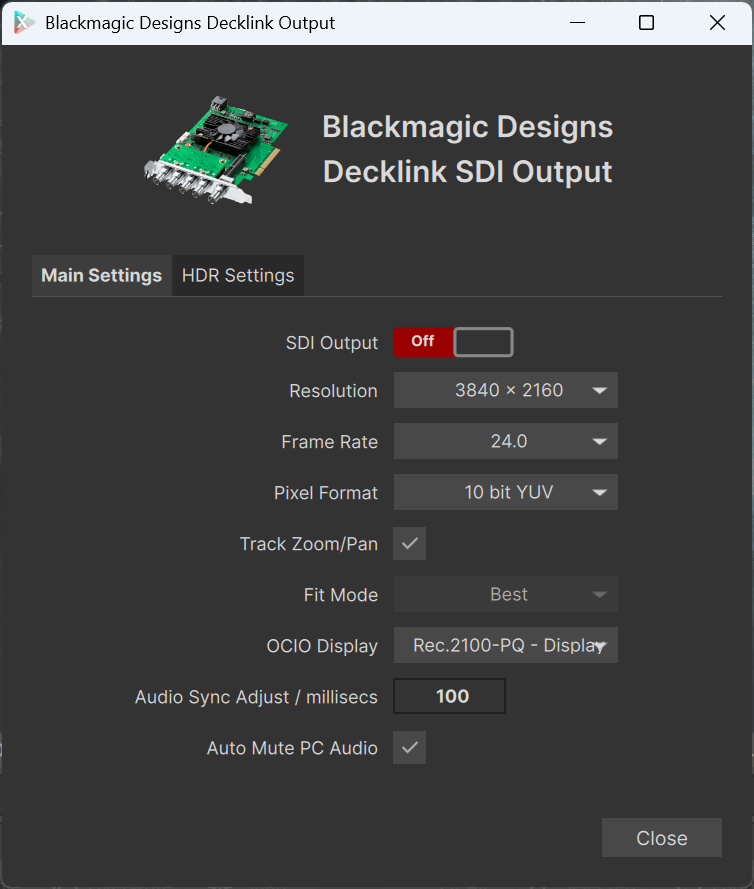
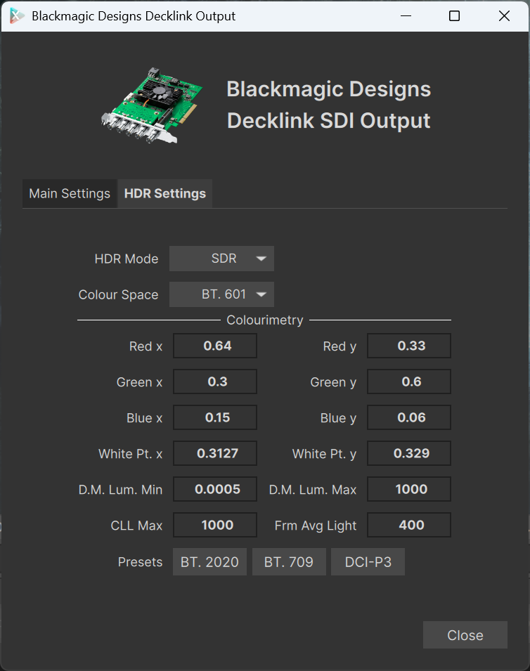

SDI: Video Output with Blackmagic Designs Decklink
xSTUDIO supports output via Blackmagic Designs (BMD) Decklink SDI PCI cards. This allows you to view your media on a reference monitor or professional projector hardware connected to the Decklink device SDI outputs while you are working in xSTUDIO. For this system to work you will naturally need a functioning Decklink SDI device and the necessary drivers installed on your system. Use the BMD utility software to test and ensure that your Decklink device is working correctly before trying to use it with xSTUDIO.
Note
The xSTUDIO Decklink plugin is not available by default in xSTUDIO. If you are building xSTUDIO yourself, simply change the entry in the CMakePresets.json file for the BUILD_DECKLINK_PLUGIN variable to ON and rebuild xSTUDIO. Otherwise, request your tech team to provide you with a build of xSTUDIO with the Decklink plugin enabled.
When xSTUDIO starts-up, watch the log output for a message like this to verify that xSTUDIO has been able to find and initialise your Decklink card:
[2026-03-23 11:43:38.676] [xstudio] [info] Decklink Card Initialised
Setting Up the SDI Output
If you have a Decklink card installed and xSTUDIO has been able to initialise it correctly then you will see an SDI button to the top left of the xSTUDIO viewport (this is part of the ‘Action Bar’ that can be toggled on and off, so ensure that the bar is visible. Click on this button to access the SDI control bar.

The SDI output control bar. Click the ‘SDI’ button to access this.
Click on the cog icon to access the SDI output settings dialog. This is where you can select the SDI output format, resolution and frame-rate. The options in the drop-down list are dictated by the capabilities of your Decklink card and the drivers that you have installed. Some older or lower spec SDI cards will only offer a limited range of output formats and resolutions. Note that you can only change these options when the SDI output is stopped.
Start and stop the SDI output by simply toggling the On/Off button in the SDI control bar. The status indicator in the bar is rightmost and you can see here whether the SDI output is active or not and if there was a problem starting the output signal.
{kind=link}

The SDI output settings dialog. Click the cog icon to access this.
The bit depth of the output video can also be set here. There are options for 8, 10 or 12 bit outputs. You must select the correct bit depth to match the capabilities of your Decklink card and the video hardware that is displaying the signal. Note that there isn’t any particular ‘cost’ in terms of the load on your host machine with the higher bit depth options.
Note
Under-the-hood, xSTUDIO renders the video frames in 16 bit per channel RGB format and then applies a bit depth reduction to 8, 10 or 12 bits as specified in the SDI output settings. This means that the colour resolution in the SDI output is fully respected and all your ‘available’ bits are used in the output signal.
The SDI output has a ‘Display’ option which is where you set the OpenColour IO (OCIO) ‘Display’ device that is used to apply colour transformations to the video signal before it is output via SDI. This setting is independent of the Display option for the main viewport in the xSTUDIO GUI.
Audio Output
The SDI plugin outputs audio via SDI as well. For audio critical review we strongly recommend using the SDI signal pathway to drive your A/V system if possible rather than rely on the PC audio output because the synchronisation between the audio and video will guaranteed with SDI. However it’s important to consider that the SDI card itself buffers around 3 video frames before they hit the screen. If you are using an SDI->HDMI converter in your set-up this may also introduce a further delay in the video output. As such, the xSTUDIO SDI plugin provides an option to apply a slight delay (in milliseconds) to the audio output so that you can tune synchronisation with the video on the screen. A video sample with a visual cue for a corresponding audio click track is ideal for this task that must be done by ear & sight.
High-Dynamic-Range (HDR) Output
{kind=link}

The SDI HDR settings tab.
Some professional video monitors or high-end comsumer TVs support High-Dynamic-Range (HDR) video. If your Decklink card and the monitor you are using support HDR then you can enable this in the SDI output settings via the HDR settings tab. In the ‘HDR Mode’ drop-down choosing ‘SDR’ will disable HDR and output a standard dynamic range signal. The ‘PQ’ option here refers to the Perceptual Quantizer (PQ) HDR curve which is the most widely used HDR curve in the industry and is supported by most HDR-capable display devices.
There are numerous lower-level settings that can be configured in this interface and these set the shape of the HDR curve that is applied to the video signal by your monitor, TV or projector. If you aren’t sure what these numbers mean you must seek out technical advice on how to set these parameters correctly for your particular monitor and the type of HDR signal you want to output, as documenting this is beyond the scope of this manual. Some standard presets are provided for these settings, however, which may be all that is required.
For HDR viewing you will also need an appropriate ‘Display’ device configuration in the OpenColor IO (OCIO) configuration that you are using in xSTUDIO to ensure that the correct colour transformations are applied to the video signal before it is output via SDI. Again, seek out technical advice or refer to OCIO documentation if you aren’t sure how to set this up correctly.
Troubleshooting
If you are having trouble getting the SDI output working correctly, here are some things to check: * Ensure that your Decklink card is properly installed and configured on your system and that you have the latest drivers installed. Use the BMD utility software to test the card and ensure it is working correctly. * Check the xSTUDIO log output for any error messages related to the Decklink plugin or SDI output. This can provide clues as to what might be going wrong. * Verify that you have selected the correct SDI output format, resolution and frame-rate in the SDI output settings or try varying these settings to see if it resolves the issue. Some monitors or projectors may only support certain formats or resolutions. * If you are using an SDI->HDMI converter, check that it is working correctly and that it supports the output format you have selected. * If you are trying to output HDR video, ensure that your monitor supports HDR and that you have configured the HDR settings correctly in the SDI output settings. * During testing the xSTUDIO developers have occasionally seen issues with certain models of Decklink card where it appears to be working correctly but the video output is not visible on the monitor after looking into the above checks first. In these cases often simply re-starting xSTUDIO will resolve the issue.